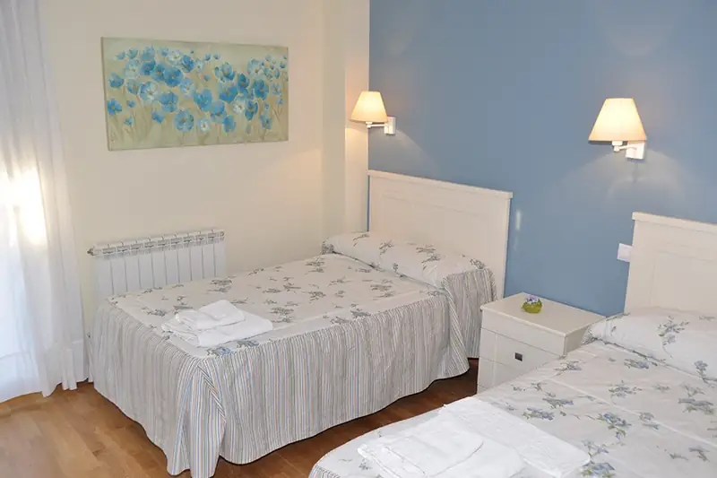
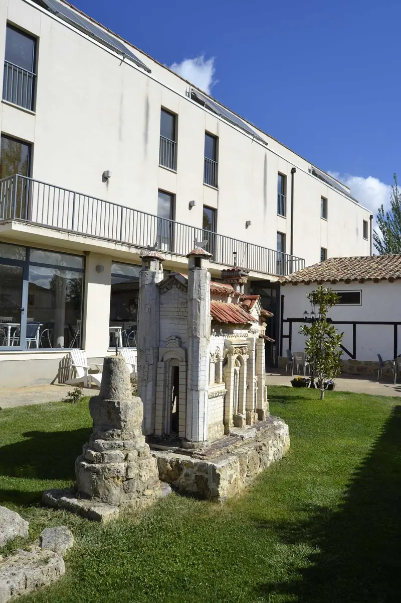
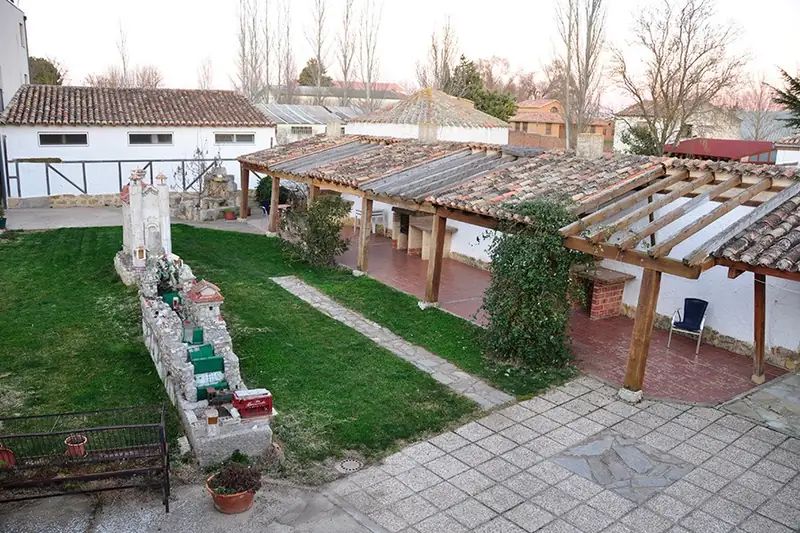
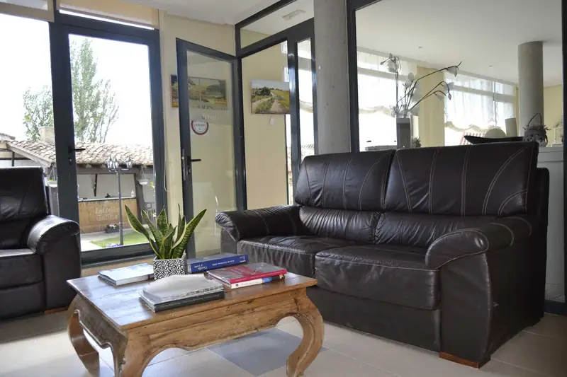
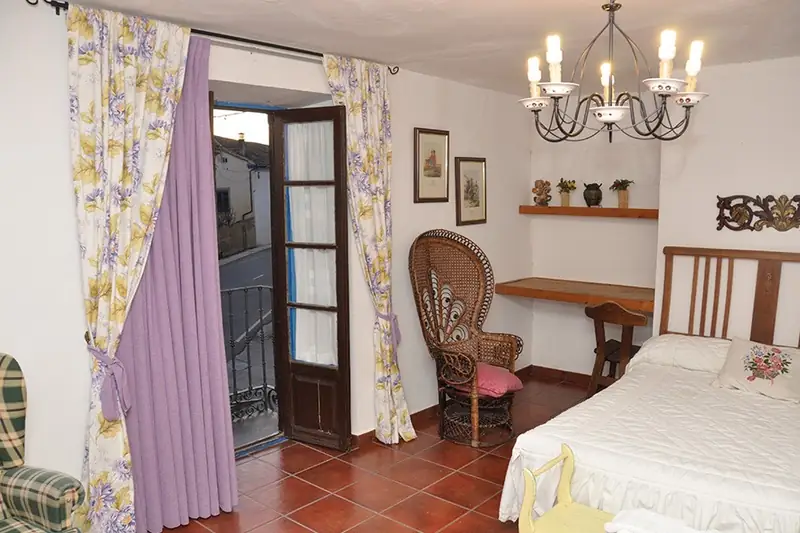
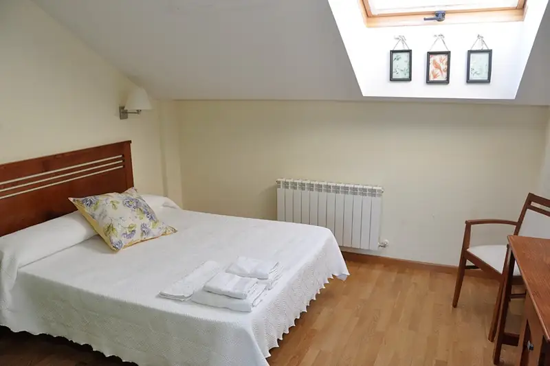
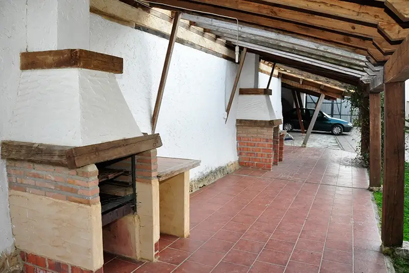
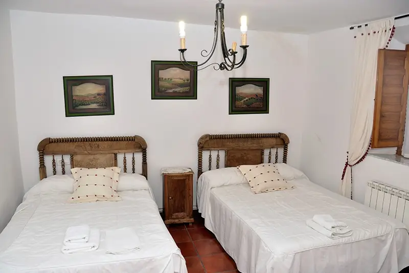
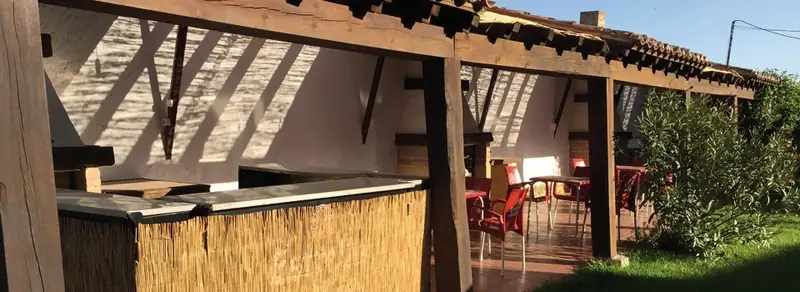
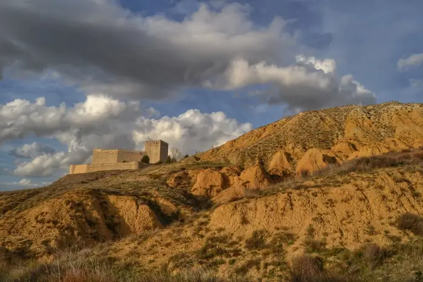
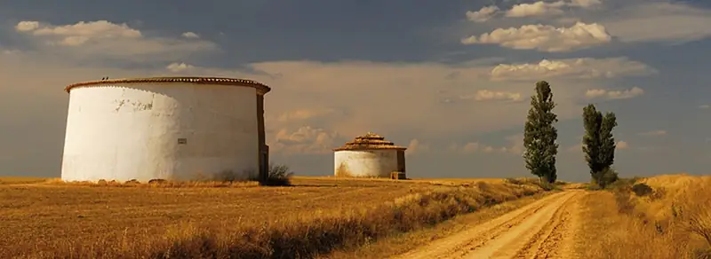
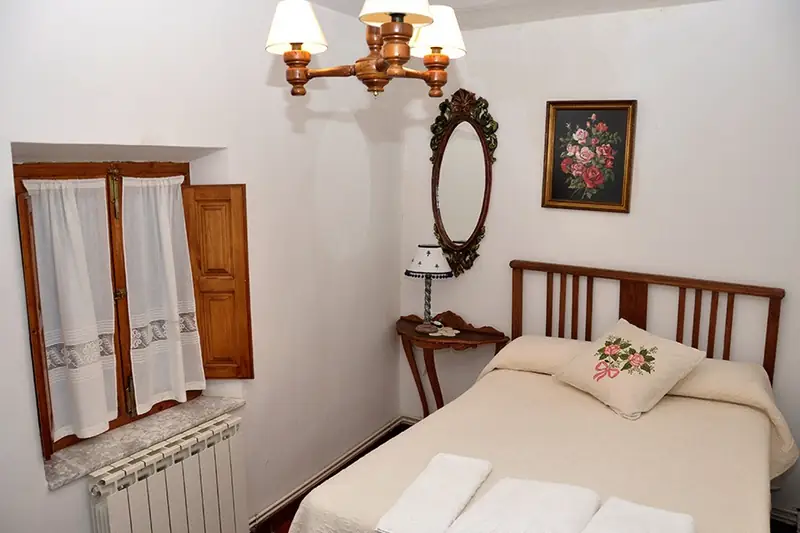
- Camino de Santiago
- Frómista · San Martín de Tours
- Canal de Castilla
- Carrión de los Condes
- Villalcázar de Sirga
- Villa Romana La Olmeda
- Palencia (34 km)
C/ Fuente Nueva, s/n · 34449 Población de Campos (Palencia)